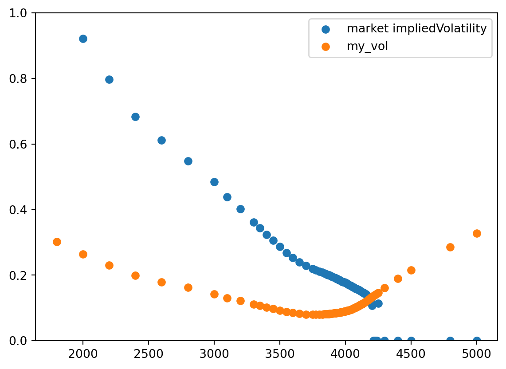

import numpy as np
from scipy.stats import norm
import warnings
warnings.filterwarnings("ignore", category=RuntimeWarning) # used for IV calculation, ignore divide by zero warning
def bs(*params):
S, K, r, sigma, T, q, option_type = params
d1 = (np.log(S / K) + (r - q + 0.5 * sigma**2) * T) / (sigma * np.sqrt(T))
d2 = d1 - sigma * np.sqrt(T)
if option_type == "call":
return S * np.exp(-q * T) * norm.cdf(d1) - K * np.exp(-r * T) * norm.cdf(d2)
if option_type == "put":
return K * np.exp(-r * T) * norm.cdf(-d2) - S * np.exp(-q * T) * norm.cdf(-d1)
else:
raise ("option_type must be 'call' or 'put'")
def vega(*params):
S, K, r, sigma, T, q = params
d1 = (np.log(S / K) + (r - q + 0.5 * sigma**2) * T) / (sigma * np.sqrt(T))
return S * np.exp(-q * T) * norm.pdf(d1) * np.sqrt(T)FE 621 Homework 1 with python
Black-Scholes formula and Vega
Download data
import yfinance as yf
import pandas as pd
import numpy as np
def get_spx_data(date:str):
"""Download SPX option data and stock price, doing necessary data cleaning
Args:
date (str): option expiration date
"""
spx = yf.Ticker("^SPX")
opt_data = spx.option_chain(spy_opt_dates[0])
df = opt_data.calls.append(opt_data.puts)
df["close"] = spx.history().iloc[-1, :]["Close"]
df["div"] = spx.history().iloc[-1, :]["Dividends"]
df["date"] = date
df['type'] = df['contractSymbol'].apply(lambda x: "call" if x.find("C") != -1 else "put")
df['mid'] = (df['bid'] + df['ask']) / 2
df['T'] = (pd.to_datetime(date) - pd.Timestamp.today()).days / 252
return df
spy = yf.Ticker("^SPX")
opt_dates = np.array(spy.options)
spy_opt_dates = opt_dates[[10, 15, 20, 24, 27]]
test = get_spx_data(spy_opt_dates[4])
test.head()/var/folders/96/q3xdlgtd7x9c__b7vz9jl9lh0000gn/T/ipykernel_27998/639117605.py:13: FutureWarning:
The frame.append method is deprecated and will be removed from pandas in a future version. Use pandas.concat instead.
| contractSymbol | lastTradeDate | strike | lastPrice | bid | ask | change | percentChange | volume | openInterest | impliedVolatility | inTheMoney | contractSize | currency | close | div | date | type | mid | T | |
|---|---|---|---|---|---|---|---|---|---|---|---|---|---|---|---|---|---|---|---|---|
| 0 | SPXW230313C03300000 | 2023-02-09 21:03:50+00:00 | 3300.0 | 790.76 | 669.6 | 675.4 | 0.0 | 0.0 | NaN | 0 | 0.491247 | True | REGULAR | USD | 3970.040039 | 0.0 | 2023-07-21 | call | 672.50 | 0.571429 |
| 1 | SPXW230313C03400000 | 2023-02-07 21:00:10+00:00 | 3400.0 | 770.94 | 571.3 | 574.6 | 0.0 | 0.0 | NaN | 18 | 0.411810 | True | REGULAR | USD | 3970.040039 | 0.0 | 2023-07-21 | call | 572.95 | 0.571429 |
| 2 | SPXW230313C03500000 | 2023-02-21 15:43:29+00:00 | 3500.0 | 538.02 | 471.9 | 475.2 | 0.0 | 0.0 | 2.0 | 0 | 0.355323 | True | REGULAR | USD | 3970.040039 | 0.0 | 2023-07-21 | call | 473.55 | 0.571429 |
| 3 | SPXW230313C03600000 | 2023-02-07 18:44:03+00:00 | 3600.0 | 514.20 | 373.3 | 376.4 | 0.0 | 0.0 | 3.0 | 12 | 0.302680 | True | REGULAR | USD | 3970.040039 | 0.0 | 2023-07-21 | call | 374.85 | 0.571429 |
| 4 | SPXW230313C03650000 | 2023-02-14 20:47:44+00:00 | 3650.0 | 501.76 | 324.6 | 327.7 | 0.0 | 0.0 | NaN | 0 | 0.280464 | True | REGULAR | USD | 3970.040039 | 0.0 | 2023-07-21 | call | 326.15 | 0.571429 |
Calculate IV and Visulization
def calc_imp_vol2(x):
S, K, T, q, option_type, market_price = x[
["close", "strike", "T", "div", "type", "mid"]
].values
r = 0.0458
vol = 0.8
for _ in range(200):
vol = vol - (bs(S, K, r, vol, T, q, option_type) - market_price) / vega(
S, K, r, vol, T, q
)
if abs(bs(S, K, r, vol, T, q, option_type) - market_price) < 1e-6:
return vol
return vol
test["my_vol"] = test.apply(calc_imp_vol2, axis=1)
test.tail()| contractSymbol | lastTradeDate | strike | lastPrice | bid | ask | change | percentChange | volume | openInterest | ... | inTheMoney | contractSize | currency | close | div | date | type | mid | T | my_vol | |
|---|---|---|---|---|---|---|---|---|---|---|---|---|---|---|---|---|---|---|---|---|---|
| 94 | SPXW230313P04300000 | 2023-02-17 17:01:47+00:00 | 4300.0 | 236.94 | 323.7 | 329.4 | 0.0 | 0.0 | 1.0 | 5 | ... | True | REGULAR | USD | 3970.040039 | 0.0 | 2023-07-21 | put | 326.55 | 0.571429 | 0.161223 |
| 95 | SPXW230313P04400000 | 2023-02-15 18:07:37+00:00 | 4400.0 | 271.78 | 423.3 | 429.0 | 0.0 | 0.0 | 2.0 | 8 | ... | True | REGULAR | USD | 3970.040039 | 0.0 | 2023-07-21 | put | 426.15 | 0.571429 | 0.188935 |
| 96 | SPXW230313P04500000 | 2023-02-07 18:44:03+00:00 | 4500.0 | 389.80 | 523.1 | 528.8 | 0.0 | 0.0 | 3.0 | 4 | ... | True | REGULAR | USD | 3970.040039 | 0.0 | 2023-07-21 | put | 525.95 | 0.571429 | 0.214912 |
| 97 | SPXW230313P04800000 | 2023-02-13 15:52:26+00:00 | 4800.0 | 663.48 | 822.4 | 828.2 | 0.0 | 0.0 | NaN | 1 | ... | True | REGULAR | USD | 3970.040039 | 0.0 | 2023-07-21 | put | 825.30 | 0.571429 | 0.285007 |
| 98 | SPXW230313P05000000 | 2023-02-14 15:48:26+00:00 | 5000.0 | 874.55 | 1022.1 | 1027.8 | 0.0 | 0.0 | 200.0 | 350 | ... | True | REGULAR | USD | 3970.040039 | 0.0 | 2023-07-21 | put | 1024.95 | 0.571429 | 0.327228 |
5 rows × 21 columns
Simply plot IV versus strike:
import matplotlib.pyplot as plt
plt.scatter(test[test["type"]=="put"]['strike'], test[test["type"]=="put"]['impliedVolatility'], label='market impliedVolatility')
plt.scatter(test[test["type"]=="put"]['strike'], test[test["type"]=="put"]['my_vol'], label='my_vol')
plt.ylim((0, 1))
plt.legend()
plt.show()